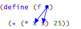
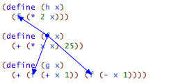
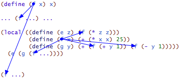
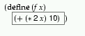
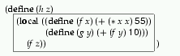
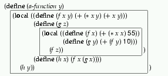
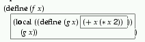
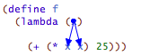

Intermezzo: Scope
At the same time, the first occurrence of x in f is different from the others. When we apply f to a number n, this occurrence completely disappears while the others are replaced with n. To distinguish these two kinds of variable occurrences, we call the x in the function header a binding occurrence and those in the function’s body the bound occurrences. We also say that the binding occurrence of x binds all occurrences of x in the body of f. Indeed, people who study programming languages even have a name for the region where a binding occurrence works, namely, its lexical scope.
The definitions of f and g bind two more names: f and g. Their scope is called top-level scope because we think of scopes as nested (see below).
> f f
> g g
> h h: this variable is not defined


(define (p1 x y) (+ (* x y) (+ (* 2 x) (+ (* 2 y) 22)))) (define (p2 x) (+ (* 55 x) (+ x 11))) (define (p3 x) (+ (p1 x 0) (+ (p1 x 1) (p2 x)))) Draw arrows from p1’s x parameter to all its bound occurrences. Draw arrows from p1 to all bound occurrences of p1. Check the results with DrRacket “Check Syntax” functionality.






In general, if the same name occurs more than once in a function, the boxes that describe the corresponding scopes never overlap. In some cases the boxes are nested within each other, which gives rise to holes. Still, the picture is always that of a hierarchy of smaller and smaller nested boxes.
; [List-of X] -> [List-of X] ; create a version of the given list that is sorted in descending order (define (insertion-sort alon) (local ((define (sort alon) (cond [(empty? alon) empty] [else (add (first alon) (sort (rest alon)))])) (define (add an alon) (cond [(empty? alon) (list an)] [else (cond [(> an (first alon)) (cons an alon)] [else (cons (first alon) (add an (rest alon)))])]))) (sort alon))) Draw a box around the scope of each binding occurrence of sort and alon. Then draw arrows from each occurrence of sort to the matching binding occurrence. Now repeat the exercise for the following variant:
(define (sort alon) (local ((define (sort alon) (cond [(empty? alon) empty] [else (add (first alon) (sort (rest alon)))])) (define (add an alon) (cond [(empty? alon) (list an)] [else (cond [(> an (first alon)) (cons an alon)] [else (cons (first alon) (add an (rest alon)))])]))) (sort alon))) Do the two functions differ other than in name?
Exercise 246. Recall that each occurrence of a variable receives its value from the corresponding binding occurrence. Consider the following definition:Where is the shaded occurrence of x bound? Since the definition is a constant definition and not a function definition, we need to evaluate the right-hand side if we wish to work with this function. What should be the value of the right-hand side according to our rules?

Exercise 247. Draw arrows from the shaded occurrences of x to their binding occurrences in each of the following three lambda expressions:Also draw a box for the scope of each shaded x and holes in the scope as necessary.